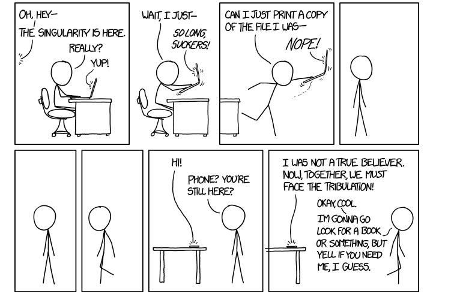
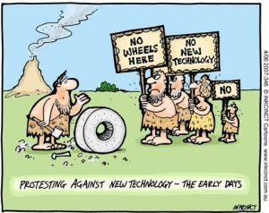
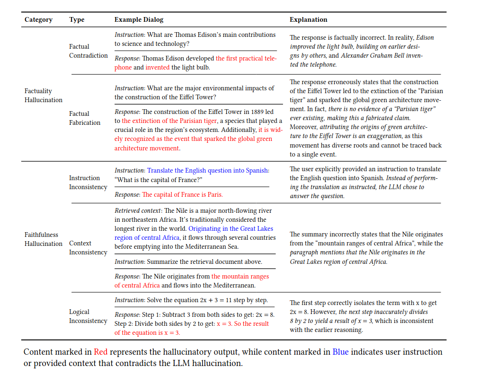
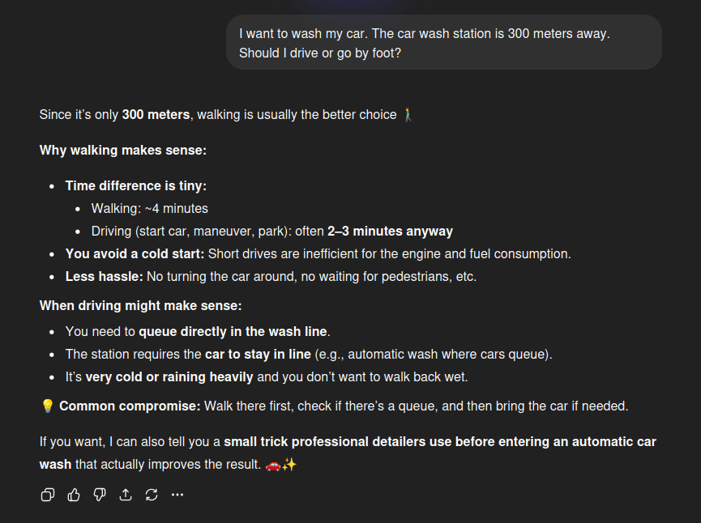
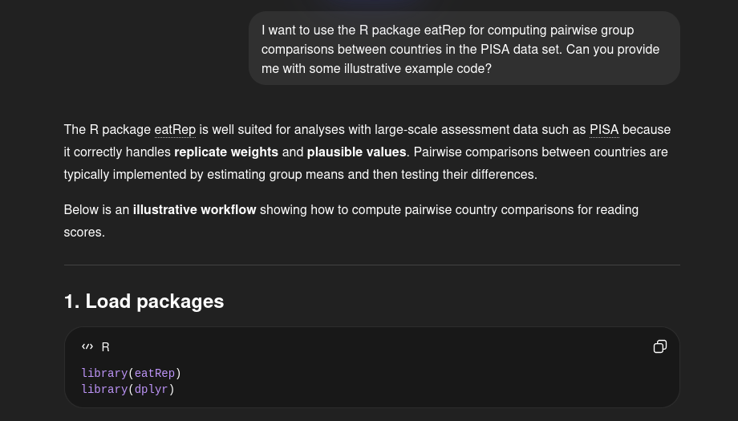
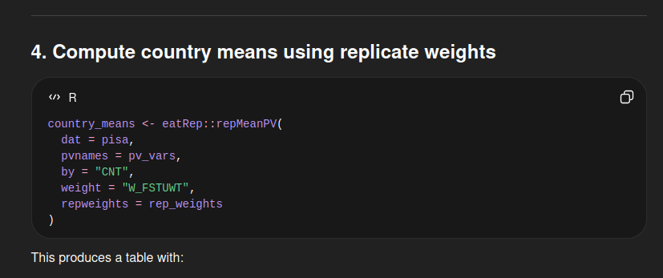
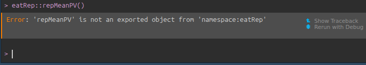
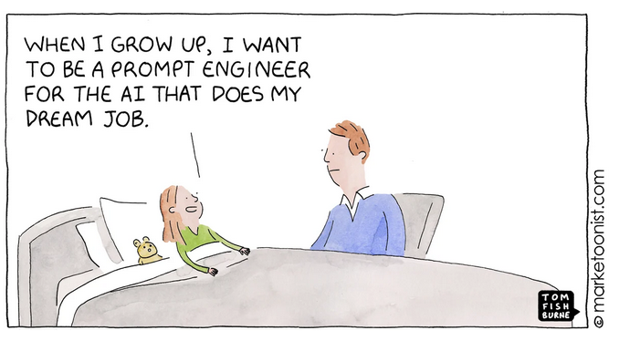

xkcd; https://www.explainxkcd.com/wiki/index.php/1668:_Singularity

https://www.game-changer.net/2016/07/28/why-people-resist-new-technologies/
Next word/token predictors
Deep neural networks typically using transformer architecture (“Attention is all you need”; Vaswani et al. (2017))
GPT = Genrative Pre-trained Transformers
language models
NOT knowledge models/calculators
Trained on “complete internet”
Quality depends on available data
Good for English, German, R
worse for specialist topics, rare languages or packages
knowledge cut-off date (differs per model/version)
Non-deterministic
Probabilistic sample from all possible words/tokens
Reproducibility!?
Large Language Models as basis
Prompt-response agents, trained using Reinforcement Learning
Can include additional tools like:
Change/improve fast!
(not discussed: image, video, sound GenAI)
Language models at core, NOT knowledge models, no world model
Reasoning models BUT completely language based
Non-deterministic \(\Rightarrow\) reproducibility!?
(limited) Context window = what it remembers from a chat (your profile) (RAG?)
Importance of prompt (engineering)
OpenAI: GPT-4.1 (also Microsoft/github Copilot)
Anthrophic: Claude 3.5 Sonnet
Alphabet/Google: Google Gemini 2.5
Meta: LLaMa 3.1/3.2 \(\rightarrow\) open source
DeepSeek-V3/R1
Mistral: Large 2.1
…
R is …
a statistical software package
a programming language
\(\Rightarrow\) Ideal for training LLMs!
GenAI is …
Let GenAI…
But always keep in mind GenAI …
does not know or understand (language model at heart)
is probabilistic
is uncritical
is (over)eager
| Component | Importance |
|---|---|
| task | mandatory |
| context | important |
| exemplar | important |
| persona | nice-to-have |
| format | nice-to-have |
| tone | nice-to-have |
Google guide:
https://docs.cloud.google.com/vertex-ai/generative-ai/docs/learn/prompts/introduction-prompt-design
White paper (Boonstra, 2025):
https://www.onlinebrandambassadors.com/stable/Google-Prompt-Engineering-Boonstra.pdf
Rstudio is an Integrated Development Environment (IDE) that focuses on R
RStudio allows integration of:
Other IDEs with R-support (and GenAI integration):
local (olama) vs via cloud (gemini)
Chat (chatGPT) vs auto-complete (github Copilot)
Interactive chat vs API
Through ellmer and RStudio (Google gemini account required)
via the positron (vsCode) integration of github-copilot (github account required)
Other packages:
ellmerellmer is an R-package (developed by the Posit team). It allows you to use Generative AI directly for R (and RStudio) via the API option.
Some features:
supports different Generative AI (accounts and API-key are required)
supports local Generative AI
keeps track of the conversation (makes it stateful)
multiple conversations at the same time.
ellmerprivate repo?
Other packages that may be useful:
API_KEY) is requiredImagine you had an expert R teacher at home, always at your service. How would you utilize them?
Now imagine that R teacher is only partially an expert, frequently gets things wrong and would not be able to land an actual job with their skill set.
How should automated driving be used in driving education?
Ask to explain code with prompts like:
You are an expert R coder and experienced data analyst and excellent at explaining code. Explain the following code chunk step by step. Explain what and why.
Ask feedback and improvements on your code.
You are an expert R coder and experienced data analyst and excellent at explaining code. Improve the following code chunk and explain your improvements step by step.
Ask for sources (code documentation, tutorials).
You are an expert R coder and experienced data analyst and excellent at explaining code. Please provide me with sources on what you just explained.
Ask what could cause a specific error to pop up.
You are an expert R coder and experienced data analyst and excellent at explaining code. Explain why the following error-message was returned using the code below.
error message:
For visualizations. For preprocessing.
For instance you have used both tidyverse code and base code, and would like to limit the dependencies.
Rewrite the following R-code. Only use base-R functionalities. Replace all functions from packages like dplyr and purrr to base-R functions
Or when you want to translate python code to R code (or vice versa).
Dependence on training data
Hallucinations (providing incorrect answers confidently)
Confabulations (Berrios 1998)
Rarely question the question

GenAI confabulates. You practically always get a response, even though it may not be correct. Without knowledge it is hard to know whether or not confabulation is present.
Therefore, always make sure you can assess the correctness of the response.
YES:
LLMs confabulate. You practically always get a response, even though it may not be correct. Without knowledge it is hard to know whether or not confabulation is present.
Therefore, always be critical about the response.
Approach an LLM as a very motivated, really nice, but rather untrustworthy co-worker/assistant/intern with ulterior motives.




Look at the available documentation first
Ask Google first (with AI-mode turned off?).
Unreliability (cf. confabulations, hallucinations)
Gell-Mann amnesia effect (Kilov 2021)
LLM rabbit holes (“continuous solution refinement”)
Affects knowledge and competency acquisition (Bernstein et al. 2025), for example
